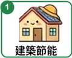
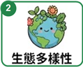
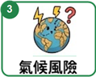

MISSION 01 小小行動，大大改變
給地球一個
涼快的未來。
綠能接接樂，守護行動開始！
和小特務一起接住好能量，讓低碳生活發生。
你的守護任務HOW TO PLAY
接住綠能好夥伴
+10認出低碳寶物，累積地球的好能量。
閃開高碳污染怪
−10小心污染與浪費，別讓它們進籃子！
迎戰氣候知識魔王
±20第 20、40 秒，用是非題守護地球。
↔
滑鼠移動或 ← → / A D手機、平板可直接左右拖曳小特務
地球降溫計畫READY, SET, GREEN!
綠能積分0 / 100
剩餘時間60秒
地球守護隊 · 科學節特別任務
綠能接接樂！
挑戰 60 秒，接住綠能、閃開污染！
◷ 60 秒守護地球✦ 100 分獲得現場小禮物資格
綠能低碳寶物
節能、減少浪費，讓地球更涼快！
高碳污染怪獸
排放、污染和浪費，這些要閃開！
⚡ 魔王是非題
用氣候知識守護地球！



魔王來了，怎麼辦？
- 第 20、40 秒出題，提前 3 秒特效預告。
- 暫停掉落與遊戲計時，5 秒內按下 ○ 正確或 × 錯誤。
- 答對 +20 分，答錯或逾時 −20 分。
- 看完解說後，點選任意畫面繼續挑戰！
↔ 滑鼠左右移動，或按 ← → / A D 移動小男生，碰到頭部才計分⚡ 第 20、40 秒迎戰魔王是非題，5 秒內作答！答對 +20，答錯 −20。手機、平板可左右拖曳 · 國際氣候發展智庫（ICDI）
左右移動，用頭接綠能，閃開污染！
⚡
魔王題即將登場！準備用氣候知識守護地球
3秒後TAKE A BREATH
地球也休息一下
準備好了，就繼續守護任務吧！
⚡ 魔王是非題時間
5秒內作答
🏅
本次守護行動，收集了
0分
挑戰達標獎勵
現場會提供精美小禮物！
ICDI國際氣候發展智庫
✧ 每接住一份綠能，都是一份改變。01 / EARTH